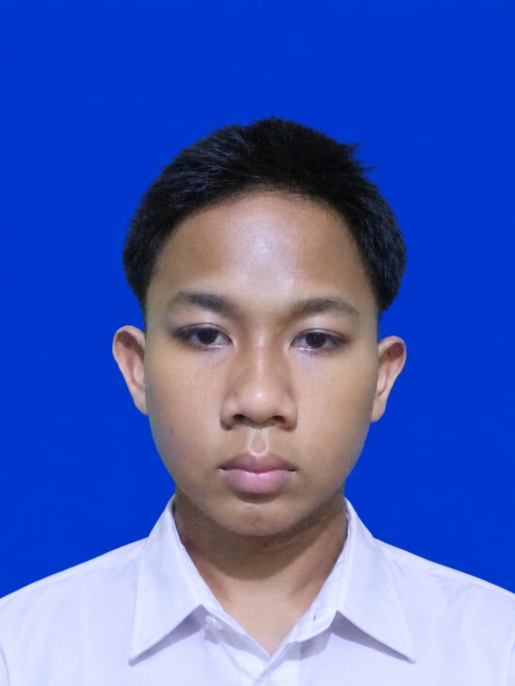
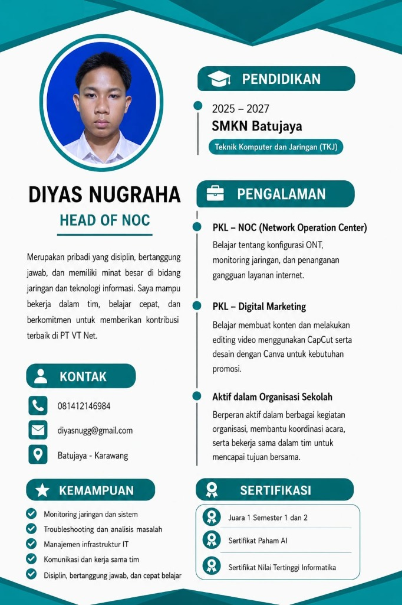

Diyas
Pelamar Head of NOC • PT VTNET • Siswa SMKN Batujaya
Pelajar SMK dengan determinasi tinggi, berkarakter fast learner, sangat tanggap dalam pemecahan masalah jaringan (problem solving), dan memiliki pengalaman kepemimpinan organisasi nyata. Berkomitmen menjaga stabilitas dan efisiensi operasional jaringan serta berambisi mencapai financial freedom lewat ekosistem bisnis otomasi Local LLM mandiri.
Riwayat Pendidikan & Prestasi
SMKN Batujaya
Saat ini • Siswa AktifSiswa Berprestasi Akademik Utama
Mempertahankan konsistensi nilai tertinggi di kelas berkat kedisiplinan belajar mandiri, kemampuan memahami materi dengan cepat, dan keaktifan di ruang belajar.
MTs Mathla'ul Anwar
Lulus • Menengah PertamaAlumni Berprestasi
Membangun fondasi logika berpikir, kedisiplinan berorganisasi, serta awal mula mengasah minat tinggi terhadap dunia teknologi dan kepemimpinan.
SDN Karyabakti 4
Lulus • Pendidikan DasarAlumni
Menyelesaikan pendidikan tingkat dasar dengan rekam jejak belajar yang konsisten dan aktif dalam berbagai kegiatan belajar mengajar.
Pengalaman Organisasi & Kepemimpinan
OSIS SMKN Batujaya
Periode KepengurusanMantan Wakil Ketua OSIS
- Membantu memimpin jalannya seluruh program kerja OSIS di lingkungan SMKN Batujaya bersama Ketua OSIS.
- Menjadi inisiator dan pelaksana berbagai kegiatan sekolah, termasuk penyelenggaraan Turnamen Catur SMKN Batujaya.
- Menjadi jembatan komunikasi yang efektif antara pihak guru, kepala sekolah, dan seluruh siswa.
- Mengasah kemampuan public speaking saat memimpin apel, memandu rapat pengurus, dan evaluasi kegiatan.
Sertifikasi Resmi
Sertifikat Program "Paham AI"
Memvalidasi pemahaman komprehensif mengenai konsep Artificial Intelligence, fondasi Large Language Model (LLM), prompt engineering, dan pemanfaatan alat AI untuk akselerasi produktivitas serta pemantauan sistem jaringan.
Sertifikat Resmi TerverifikasiVisi & Rencana 10 Tahun ke Depan
Target Utama: Financial Freedom melalui pembangunan ekosistem bisnis mandiri berbasis sistem automasi Local LLM yang dapat melayani secara berkelanjutan dan mandiri.
Sebagai anak SMK yang haus akan ilmu baru, setiap waktu saya dedikasikan untuk mengasah kemampuan teknis jaringan NOC, kepemimpinan, dan kecerdasan buatan. Ambisi 100% adalah bahan bakar utama saya.
